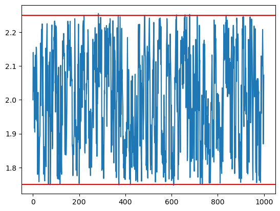

Add forbidden z region#
import molsysmt as msm
import openmm as mm
from openmm import unit
from openmm import app
from tqdm import tqdm
import numpy as np
from matplotlib import pyplot as plt
system = mm.System()
system.addParticle(39.948 * unit.amu) # masa del átomo de argón
0
msm.thirds.openmm.forces.add_forbidden_z_region(system, z0='1.0 nm', width='1.5 nm',
force_constant = '5000 kilojoules/(mol*angstroms**2)',
pbc=True)
0
# Formalismo NVT
temperature = 300*unit.kelvin
integration_timestep = 2.0*unit.femtoseconds
saving_timestep = 1.00*unit.picoseconds
simulation_time = 1000.*unit.picoseconds
saving_steps = int(saving_timestep/integration_timestep)
num_saving_steps = int(simulation_time/saving_timestep)
friction = 5.0/unit.picoseconds
integrator = mm.LangevinIntegrator(temperature, friction, integration_timestep)
platform = mm.Platform.getPlatformByName('OpenCL')
times = np.zeros(num_saving_steps, np.float32) * unit.picoseconds
positions = np.zeros([num_saving_steps,3], np.float32) * unit.nanometers
velocities = np.zeros([num_saving_steps,3], np.float32) * unit.nanometers/unit.picosecond
potential_energies = np.zeros([num_saving_steps], np.float32) * unit.kilocalories_per_mole
kinetic_energies = np.zeros([num_saving_steps], np.float32) * unit.kilocalories_per_mole
initial_positions = [[0.0, 0.0, 2.0]] * unit.nanometers
context = mm.Context(system, integrator, platform)
context.setPositions(initial_positions)
L = 2.0
v1 = [L,0,0] * unit.nanometers
v2 = [0,L,0] * unit.nanometers
v3 = [0,0,L] * unit.nanometers
L = L * unit.nanometers
context.setPeriodicBoxVectors(v1, v2, v3)
state = context.getState(getEnergy=True, getPositions=True, getVelocities=True)
times[0] = state.getTime()
positions[0] = state.getPositions()[0]
velocities[0] = state.getVelocities()[0]
kinetic_energies[0]=state.getKineticEnergy()
potential_energies[0]=state.getPotentialEnergy()
for ii in tqdm(range(1,num_saving_steps)):
context.getIntegrator().step(saving_steps)
state_xx = context.getState(getEnergy=True, getPositions=True, getVelocities=True)
times[ii] = state_xx.getTime()
positions[ii] = state_xx.getPositions()[0]
velocities[ii] = state_xx.getVelocities()[0]
kinetic_energies[ii]=state_xx.getKineticEnergy()
potential_energies[ii]=state_xx.getPotentialEnergy()
0%| | 0/999 [00:00<?, ?it/s]
0%| | 2/999 [00:00<00:59, 16.74it/s]
1%| | 5/999 [00:00<00:48, 20.69it/s]
1%| | 8/999 [00:00<00:47, 21.03it/s]
1%| | 11/999 [00:00<00:48, 20.48it/s]
1%|▏ | 14/999 [00:00<00:48, 20.45it/s]
2%|▏ | 17/999 [00:00<00:50, 19.51it/s]
2%|▏ | 19/999 [00:00<00:50, 19.43it/s]
2%|▏ | 21/999 [00:01<00:50, 19.29it/s]
2%|▏ | 23/999 [00:01<00:51, 18.81it/s]
3%|▎ | 25/999 [00:01<00:51, 18.86it/s]
3%|▎ | 27/999 [00:01<00:52, 18.56it/s]
3%|▎ | 30/999 [00:01<00:49, 19.74it/s]
3%|▎ | 32/999 [00:01<00:49, 19.71it/s]
4%|▎ | 35/999 [00:01<00:52, 18.22it/s]
4%|▎ | 37/999 [00:01<00:56, 17.07it/s]
4%|▍ | 39/999 [00:02<00:57, 16.73it/s]
4%|▍ | 41/999 [00:02<01:01, 15.48it/s]
4%|▍ | 44/999 [00:02<00:54, 17.47it/s]
5%|▍ | 46/999 [00:02<00:54, 17.64it/s]
5%|▍ | 48/999 [00:02<00:52, 17.97it/s]
5%|▌ | 50/999 [00:02<00:53, 17.59it/s]
5%|▌ | 52/999 [00:02<00:53, 17.79it/s]
5%|▌ | 54/999 [00:02<00:52, 17.90it/s]
6%|▌ | 56/999 [00:03<00:52, 17.89it/s]
6%|▌ | 58/999 [00:03<00:56, 16.73it/s]
6%|▌ | 60/999 [00:03<00:53, 17.46it/s]
6%|▋ | 63/999 [00:03<00:48, 19.47it/s]
7%|▋ | 66/999 [00:03<00:48, 19.43it/s]
7%|▋ | 68/999 [00:03<00:49, 18.91it/s]
7%|▋ | 70/999 [00:03<00:50, 18.34it/s]
7%|▋ | 72/999 [00:03<00:49, 18.68it/s]
7%|▋ | 74/999 [00:04<00:49, 18.68it/s]
8%|▊ | 76/999 [00:04<00:48, 18.94it/s]
8%|▊ | 79/999 [00:04<00:48, 19.16it/s]
8%|▊ | 81/999 [00:04<00:48, 18.95it/s]
8%|▊ | 83/999 [00:04<00:49, 18.41it/s]
9%|▊ | 85/999 [00:04<00:50, 17.93it/s]
9%|▊ | 87/999 [00:04<00:50, 17.91it/s]
9%|▉ | 89/999 [00:04<00:49, 18.34it/s]
9%|▉ | 91/999 [00:04<00:49, 18.28it/s]
9%|▉ | 94/999 [00:05<00:46, 19.29it/s]
10%|▉ | 96/999 [00:05<00:48, 18.63it/s]
10%|▉ | 99/999 [00:05<00:44, 20.25it/s]
10%|█ | 102/999 [00:05<00:46, 19.28it/s]
11%|█ | 105/999 [00:05<00:42, 21.24it/s]
11%|█ | 108/999 [00:05<00:45, 19.54it/s]
11%|█ | 111/999 [00:05<00:47, 18.85it/s]
11%|█▏ | 113/999 [00:06<00:46, 18.94it/s]
12%|█▏ | 116/999 [00:06<00:42, 20.68it/s]
12%|█▏ | 119/999 [00:06<00:43, 20.16it/s]
12%|█▏ | 122/999 [00:06<00:43, 20.01it/s]
13%|█▎ | 125/999 [00:06<00:43, 19.93it/s]
13%|█▎ | 128/999 [00:06<00:45, 19.08it/s]
13%|█▎ | 131/999 [00:06<00:43, 19.83it/s]
13%|█▎ | 134/999 [00:07<00:46, 18.76it/s]
14%|█▎ | 137/999 [00:07<00:46, 18.71it/s]
14%|█▍ | 139/999 [00:07<00:50, 17.08it/s]
14%|█▍ | 141/999 [00:07<00:49, 17.26it/s]
14%|█▍ | 143/999 [00:07<00:49, 17.36it/s]
15%|█▍ | 145/999 [00:07<00:50, 16.90it/s]
15%|█▍ | 147/999 [00:07<00:48, 17.40it/s]
15%|█▍ | 149/999 [00:08<00:50, 16.90it/s]
15%|█▌ | 151/999 [00:08<00:50, 16.71it/s]
15%|█▌ | 153/999 [00:08<00:50, 16.86it/s]
16%|█▌ | 155/999 [00:08<00:50, 16.80it/s]
16%|█▌ | 158/999 [00:08<00:46, 18.15it/s]
16%|█▌ | 161/999 [00:08<00:44, 18.87it/s]
16%|█▋ | 163/999 [00:08<00:44, 18.73it/s]
17%|█▋ | 166/999 [00:08<00:45, 18.19it/s]
17%|█▋ | 168/999 [00:09<00:44, 18.52it/s]
17%|█▋ | 170/999 [00:09<00:47, 17.31it/s]
17%|█▋ | 172/999 [00:09<00:47, 17.27it/s]
18%|█▊ | 175/999 [00:09<00:44, 18.66it/s]
18%|█▊ | 177/999 [00:09<00:44, 18.60it/s]
18%|█▊ | 179/999 [00:09<00:43, 18.74it/s]
18%|█▊ | 182/999 [00:09<00:41, 19.87it/s]
18%|█▊ | 184/999 [00:09<00:42, 19.26it/s]
19%|█▊ | 186/999 [00:10<00:42, 18.96it/s]
19%|█▉ | 188/999 [00:10<00:42, 18.93it/s]
19%|█▉ | 191/999 [00:10<00:42, 18.95it/s]
19%|█▉ | 194/999 [00:10<00:41, 19.21it/s]
20%|█▉ | 197/999 [00:10<00:38, 21.05it/s]
20%|██ | 200/999 [00:10<00:38, 20.62it/s]
20%|██ | 203/999 [00:10<00:42, 18.54it/s]
21%|██ | 206/999 [00:11<00:41, 19.29it/s]
21%|██ | 208/999 [00:11<00:41, 18.94it/s]
21%|██ | 210/999 [00:11<00:42, 18.57it/s]
21%|██ | 212/999 [00:11<00:41, 18.91it/s]
22%|██▏ | 215/999 [00:11<00:38, 20.28it/s]
22%|██▏ | 218/999 [00:11<00:38, 20.52it/s]
22%|██▏ | 221/999 [00:11<00:38, 20.21it/s]
22%|██▏ | 224/999 [00:11<00:40, 19.16it/s]
23%|██▎ | 226/999 [00:12<00:42, 18.40it/s]
23%|██▎ | 229/999 [00:12<00:42, 18.09it/s]
23%|██▎ | 231/999 [00:12<00:42, 17.95it/s]
23%|██▎ | 233/999 [00:12<00:42, 17.99it/s]
24%|██▎ | 235/999 [00:12<00:42, 17.87it/s]
24%|██▍ | 238/999 [00:12<00:37, 20.03it/s]
24%|██▍ | 241/999 [00:12<00:35, 21.42it/s]
24%|██▍ | 244/999 [00:12<00:35, 21.00it/s]
25%|██▍ | 247/999 [00:13<00:36, 20.74it/s]
25%|██▌ | 250/999 [00:13<00:37, 19.76it/s]
25%|██▌ | 252/999 [00:13<00:38, 19.55it/s]
25%|██▌ | 254/999 [00:13<00:38, 19.39it/s]
26%|██▌ | 257/999 [00:13<00:35, 20.66it/s]
26%|██▌ | 260/999 [00:13<00:34, 21.48it/s]
26%|██▋ | 263/999 [00:13<00:35, 20.45it/s]
27%|██▋ | 266/999 [00:14<00:34, 21.36it/s]
27%|██▋ | 269/999 [00:14<00:33, 22.04it/s]
27%|██▋ | 272/999 [00:14<00:32, 22.50it/s]
28%|██▊ | 275/999 [00:14<00:31, 22.66it/s]
28%|██▊ | 278/999 [00:14<00:31, 22.92it/s]
28%|██▊ | 281/999 [00:14<00:31, 23.09it/s]
28%|██▊ | 284/999 [00:14<00:35, 20.34it/s]
29%|██▊ | 287/999 [00:15<00:36, 19.34it/s]
29%|██▉ | 289/999 [00:15<00:37, 18.84it/s]
29%|██▉ | 291/999 [00:15<00:42, 16.74it/s]
29%|██▉ | 294/999 [00:15<00:41, 17.10it/s]
30%|██▉ | 296/999 [00:15<00:41, 17.07it/s]
30%|██▉ | 299/999 [00:15<00:35, 19.70it/s]
30%|███ | 302/999 [00:15<00:32, 21.16it/s]
31%|███ | 305/999 [00:15<00:33, 21.01it/s]
31%|███ | 308/999 [00:16<00:36, 19.14it/s]
31%|███ | 310/999 [00:16<00:37, 18.47it/s]
31%|███ | 312/999 [00:16<00:37, 18.36it/s]
32%|███▏ | 315/999 [00:16<00:35, 19.37it/s]
32%|███▏ | 317/999 [00:16<00:36, 18.85it/s]
32%|███▏ | 320/999 [00:16<00:32, 21.04it/s]
32%|███▏ | 323/999 [00:16<00:34, 19.35it/s]
33%|███▎ | 325/999 [00:17<00:35, 18.89it/s]
33%|███▎ | 327/999 [00:17<00:36, 18.44it/s]
33%|███▎ | 329/999 [00:17<00:39, 17.15it/s]
33%|███▎ | 331/999 [00:17<00:38, 17.47it/s]
33%|███▎ | 333/999 [00:17<00:36, 18.11it/s]
34%|███▎ | 336/999 [00:17<00:33, 19.68it/s]
34%|███▍ | 339/999 [00:17<00:30, 21.52it/s]
34%|███▍ | 342/999 [00:17<00:31, 21.19it/s]
35%|███▍ | 345/999 [00:18<00:29, 22.50it/s]
35%|███▍ | 348/999 [00:18<00:30, 21.12it/s]
35%|███▌ | 351/999 [00:18<00:33, 19.58it/s]
35%|███▌ | 354/999 [00:18<00:32, 19.88it/s]
36%|███▌ | 357/999 [00:18<00:31, 20.52it/s]
36%|███▌ | 360/999 [00:18<00:32, 19.56it/s]
36%|███▌ | 362/999 [00:18<00:33, 18.94it/s]
37%|███▋ | 365/999 [00:19<00:30, 20.63it/s]
37%|███▋ | 368/999 [00:19<00:29, 21.37it/s]
37%|███▋ | 371/999 [00:19<00:31, 19.67it/s]
37%|███▋ | 374/999 [00:19<00:32, 18.98it/s]
38%|███▊ | 376/999 [00:19<00:32, 19.12it/s]
38%|███▊ | 379/999 [00:19<00:30, 20.43it/s]
38%|███▊ | 382/999 [00:19<00:28, 21.41it/s]
39%|███▊ | 385/999 [00:20<00:27, 21.98it/s]
39%|███▉ | 388/999 [00:20<00:27, 22.12it/s]
39%|███▉ | 391/999 [00:20<00:29, 20.54it/s]
39%|███▉ | 394/999 [00:20<00:30, 19.73it/s]
40%|███▉ | 397/999 [00:20<00:31, 19.36it/s]
40%|███▉ | 399/999 [00:20<00:31, 18.84it/s]
40%|████ | 401/999 [00:20<00:31, 18.83it/s]
40%|████ | 404/999 [00:21<00:29, 20.10it/s]
41%|████ | 407/999 [00:21<00:31, 18.62it/s]
41%|████ | 410/999 [00:21<00:31, 18.72it/s]
41%|████▏ | 413/999 [00:21<00:29, 20.16it/s]
42%|████▏ | 416/999 [00:21<00:29, 20.04it/s]
42%|████▏ | 419/999 [00:21<00:30, 19.28it/s]
42%|████▏ | 422/999 [00:21<00:30, 19.14it/s]
43%|████▎ | 425/999 [00:22<00:27, 20.76it/s]
43%|████▎ | 428/999 [00:22<00:27, 20.96it/s]
43%|████▎ | 431/999 [00:22<00:28, 19.77it/s]
43%|████▎ | 434/999 [00:22<00:28, 19.77it/s]
44%|████▎ | 437/999 [00:22<00:30, 18.68it/s]
44%|████▍ | 439/999 [00:22<00:29, 18.84it/s]
44%|████▍ | 441/999 [00:22<00:29, 18.66it/s]
44%|████▍ | 443/999 [00:23<00:31, 17.54it/s]
45%|████▍ | 445/999 [00:23<00:33, 16.61it/s]
45%|████▍ | 448/999 [00:23<00:31, 17.68it/s]
45%|████▌ | 450/999 [00:23<00:30, 18.14it/s]
45%|████▌ | 452/999 [00:23<00:29, 18.55it/s]
45%|████▌ | 454/999 [00:23<00:28, 18.83it/s]
46%|████▌ | 456/999 [00:23<00:28, 19.13it/s]
46%|████▌ | 459/999 [00:23<00:27, 19.65it/s]
46%|████▌ | 462/999 [00:24<00:27, 19.80it/s]
46%|████▋ | 464/999 [00:24<00:27, 19.63it/s]
47%|████▋ | 466/999 [00:24<00:27, 19.54it/s]
47%|████▋ | 468/999 [00:24<00:27, 19.60it/s]
47%|████▋ | 470/999 [00:24<00:27, 19.44it/s]
47%|████▋ | 473/999 [00:24<00:25, 20.49it/s]
48%|████▊ | 476/999 [00:24<00:27, 18.97it/s]
48%|████▊ | 478/999 [00:24<00:27, 18.65it/s]
48%|████▊ | 480/999 [00:25<00:28, 18.18it/s]
48%|████▊ | 482/999 [00:25<00:27, 18.53it/s]
48%|████▊ | 484/999 [00:25<00:28, 17.95it/s]
49%|████▊ | 487/999 [00:25<00:26, 19.60it/s]
49%|████▉ | 489/999 [00:25<00:27, 18.32it/s]
49%|████▉ | 492/999 [00:25<00:26, 19.34it/s]
50%|████▉ | 495/999 [00:25<00:25, 19.64it/s]
50%|████▉ | 497/999 [00:25<00:26, 19.04it/s]
50%|████▉ | 499/999 [00:26<00:26, 18.93it/s]
50%|█████ | 502/999 [00:26<00:24, 20.57it/s]
51%|█████ | 505/999 [00:26<00:23, 20.71it/s]
51%|█████ | 508/999 [00:26<00:27, 17.72it/s]
51%|█████ | 510/999 [00:26<00:28, 17.22it/s]
51%|█████▏ | 513/999 [00:26<00:24, 19.66it/s]
52%|█████▏ | 516/999 [00:26<00:25, 19.16it/s]
52%|█████▏ | 518/999 [00:27<00:25, 18.68it/s]
52%|█████▏ | 520/999 [00:27<00:26, 18.42it/s]
52%|█████▏ | 522/999 [00:27<00:26, 18.23it/s]
52%|█████▏ | 524/999 [00:27<00:27, 17.45it/s]
53%|█████▎ | 526/999 [00:27<00:26, 17.70it/s]
53%|█████▎ | 528/999 [00:27<00:26, 17.69it/s]
53%|█████▎ | 530/999 [00:27<00:26, 17.84it/s]
53%|█████▎ | 532/999 [00:27<00:25, 17.98it/s]
53%|█████▎ | 534/999 [00:27<00:25, 18.09it/s]
54%|█████▍ | 537/999 [00:28<00:22, 20.16it/s]
54%|█████▍ | 540/999 [00:28<00:22, 20.02it/s]
54%|█████▍ | 543/999 [00:28<00:21, 21.14it/s]
55%|█████▍ | 546/999 [00:28<00:21, 21.28it/s]
55%|█████▍ | 549/999 [00:28<00:22, 20.45it/s]
55%|█████▌ | 552/999 [00:28<00:21, 20.41it/s]
56%|█████▌ | 555/999 [00:28<00:21, 20.75it/s]
56%|█████▌ | 558/999 [00:29<00:22, 19.21it/s]
56%|█████▌ | 560/999 [00:29<00:22, 19.21it/s]
56%|█████▋ | 562/999 [00:29<00:23, 18.92it/s]
57%|█████▋ | 565/999 [00:29<00:21, 20.29it/s]
57%|█████▋ | 568/999 [00:29<00:20, 20.53it/s]
57%|█████▋ | 571/999 [00:29<00:21, 19.52it/s]
57%|█████▋ | 573/999 [00:29<00:22, 19.13it/s]
58%|█████▊ | 575/999 [00:29<00:23, 18.28it/s]
58%|█████▊ | 577/999 [00:30<00:23, 18.14it/s]
58%|█████▊ | 579/999 [00:30<00:22, 18.45it/s]
58%|█████▊ | 582/999 [00:30<00:21, 19.70it/s]
58%|█████▊ | 584/999 [00:30<00:21, 19.73it/s]
59%|█████▊ | 586/999 [00:30<00:21, 19.03it/s]
59%|█████▉ | 588/999 [00:30<00:21, 19.08it/s]
59%|█████▉ | 590/999 [00:30<00:21, 18.77it/s]
59%|█████▉ | 593/999 [00:30<00:21, 19.27it/s]
60%|█████▉ | 596/999 [00:31<00:19, 20.20it/s]
60%|█████▉ | 599/999 [00:31<00:21, 18.57it/s]
60%|██████ | 602/999 [00:31<00:20, 19.48it/s]
61%|██████ | 605/999 [00:31<00:19, 20.16it/s]
61%|██████ | 608/999 [00:31<00:19, 20.13it/s]
61%|██████ | 611/999 [00:31<00:18, 20.69it/s]
61%|██████▏ | 614/999 [00:31<00:19, 20.22it/s]
62%|██████▏ | 617/999 [00:32<00:19, 19.89it/s]
62%|██████▏ | 620/999 [00:32<00:19, 19.27it/s]
62%|██████▏ | 622/999 [00:32<00:20, 18.74it/s]
62%|██████▏ | 624/999 [00:32<00:20, 18.37it/s]
63%|██████▎ | 626/999 [00:32<00:19, 18.72it/s]
63%|██████▎ | 628/999 [00:32<00:20, 18.53it/s]
63%|██████▎ | 630/999 [00:32<00:20, 18.36it/s]
63%|██████▎ | 633/999 [00:32<00:18, 19.45it/s]
64%|██████▎ | 635/999 [00:33<00:19, 18.95it/s]
64%|██████▍ | 637/999 [00:33<00:19, 18.46it/s]
64%|██████▍ | 639/999 [00:33<00:22, 16.36it/s]
64%|██████▍ | 641/999 [00:33<00:20, 17.21it/s]
64%|██████▍ | 643/999 [00:33<00:21, 16.88it/s]
65%|██████▍ | 646/999 [00:33<00:19, 18.34it/s]
65%|██████▍ | 649/999 [00:33<00:18, 18.46it/s]
65%|██████▌ | 651/999 [00:33<00:19, 18.00it/s]
65%|██████▌ | 653/999 [00:34<00:19, 17.66it/s]
66%|██████▌ | 656/999 [00:34<00:17, 19.30it/s]
66%|██████▌ | 659/999 [00:34<00:17, 19.75it/s]
66%|██████▌ | 661/999 [00:34<00:18, 18.21it/s]
66%|██████▋ | 663/999 [00:34<00:18, 18.04it/s]
67%|██████▋ | 665/999 [00:34<00:19, 17.52it/s]
67%|██████▋ | 667/999 [00:34<00:18, 17.53it/s]
67%|██████▋ | 669/999 [00:34<00:18, 17.83it/s]
67%|██████▋ | 671/999 [00:35<00:17, 18.39it/s]
67%|██████▋ | 674/999 [00:35<00:17, 18.52it/s]
68%|██████▊ | 676/999 [00:35<00:17, 18.44it/s]
68%|██████▊ | 678/999 [00:35<00:17, 18.43it/s]
68%|██████▊ | 680/999 [00:35<00:17, 18.20it/s]
68%|██████▊ | 683/999 [00:35<00:16, 19.52it/s]
69%|██████▊ | 685/999 [00:35<00:16, 19.47it/s]
69%|██████▉ | 687/999 [00:35<00:16, 19.38it/s]
69%|██████▉ | 689/999 [00:36<00:17, 17.92it/s]
69%|██████▉ | 692/999 [00:36<00:16, 18.44it/s]
69%|██████▉ | 694/999 [00:36<00:16, 18.37it/s]
70%|██████▉ | 696/999 [00:36<00:16, 17.87it/s]
70%|██████▉ | 698/999 [00:36<00:16, 18.21it/s]
70%|███████ | 700/999 [00:36<00:16, 18.30it/s]
70%|███████ | 702/999 [00:36<00:16, 18.49it/s]
70%|███████ | 704/999 [00:36<00:15, 18.54it/s]
71%|███████ | 706/999 [00:36<00:15, 18.39it/s]
71%|███████ | 708/999 [00:37<00:15, 18.63it/s]
71%|███████ | 710/999 [00:37<00:17, 16.59it/s]
71%|███████▏ | 712/999 [00:37<00:16, 16.98it/s]
72%|███████▏ | 715/999 [00:37<00:15, 18.31it/s]
72%|███████▏ | 717/999 [00:37<00:15, 18.27it/s]
72%|███████▏ | 719/999 [00:37<00:15, 18.67it/s]
72%|███████▏ | 721/999 [00:37<00:14, 18.67it/s]
72%|███████▏ | 723/999 [00:37<00:15, 17.84it/s]
73%|███████▎ | 726/999 [00:38<00:14, 19.23it/s]
73%|███████▎ | 728/999 [00:38<00:14, 18.84it/s]
73%|███████▎ | 730/999 [00:38<00:14, 18.51it/s]
73%|███████▎ | 732/999 [00:38<00:14, 18.23it/s]
73%|███████▎ | 734/999 [00:38<00:14, 18.45it/s]
74%|███████▎ | 736/999 [00:38<00:14, 18.04it/s]
74%|███████▍ | 738/999 [00:38<00:14, 18.37it/s]
74%|███████▍ | 740/999 [00:38<00:14, 18.21it/s]
74%|███████▍ | 742/999 [00:38<00:14, 18.31it/s]
74%|███████▍ | 744/999 [00:39<00:14, 18.12it/s]
75%|███████▍ | 746/999 [00:39<00:13, 18.09it/s]
75%|███████▍ | 748/999 [00:39<00:13, 17.97it/s]
75%|███████▌ | 750/999 [00:39<00:13, 18.09it/s]
75%|███████▌ | 752/999 [00:39<00:13, 18.16it/s]
75%|███████▌ | 754/999 [00:39<00:13, 18.27it/s]
76%|███████▌ | 756/999 [00:39<00:13, 18.24it/s]
76%|███████▌ | 758/999 [00:39<00:13, 18.17it/s]
76%|███████▌ | 760/999 [00:39<00:13, 17.93it/s]
76%|███████▋ | 762/999 [00:40<00:13, 17.77it/s]
76%|███████▋ | 764/999 [00:40<00:13, 17.73it/s]
77%|███████▋ | 767/999 [00:40<00:11, 19.87it/s]
77%|███████▋ | 770/999 [00:40<00:11, 19.55it/s]
77%|███████▋ | 772/999 [00:40<00:11, 19.41it/s]
77%|███████▋ | 774/999 [00:40<00:11, 19.22it/s]
78%|███████▊ | 776/999 [00:40<00:11, 19.09it/s]
78%|███████▊ | 778/999 [00:40<00:11, 19.01it/s]
78%|███████▊ | 780/999 [00:40<00:11, 18.76it/s]
78%|███████▊ | 782/999 [00:41<00:11, 18.79it/s]
78%|███████▊ | 784/999 [00:41<00:11, 18.84it/s]
79%|███████▉ | 787/999 [00:41<00:10, 20.18it/s]
79%|███████▉ | 790/999 [00:41<00:11, 17.80it/s]
79%|███████▉ | 792/999 [00:41<00:11, 17.66it/s]
79%|███████▉ | 794/999 [00:41<00:11, 17.66it/s]
80%|███████▉ | 796/999 [00:41<00:11, 17.48it/s]
80%|███████▉ | 798/999 [00:41<00:11, 17.48it/s]
80%|████████ | 800/999 [00:42<00:11, 17.87it/s]
80%|████████ | 802/999 [00:42<00:11, 16.97it/s]
80%|████████ | 804/999 [00:42<00:11, 17.58it/s]
81%|████████ | 806/999 [00:42<00:10, 17.75it/s]
81%|████████ | 808/999 [00:42<00:10, 17.77it/s]
81%|████████ | 811/999 [00:42<00:09, 20.25it/s]
81%|████████▏ | 814/999 [00:42<00:09, 19.79it/s]
82%|████████▏ | 816/999 [00:42<00:09, 18.61it/s]
82%|████████▏ | 818/999 [00:43<00:10, 17.12it/s]
82%|████████▏ | 820/999 [00:43<00:10, 16.91it/s]
82%|████████▏ | 822/999 [00:43<00:10, 17.04it/s]
82%|████████▏ | 824/999 [00:43<00:10, 17.08it/s]
83%|████████▎ | 826/999 [00:43<00:09, 17.68it/s]
83%|████████▎ | 828/999 [00:43<00:09, 18.05it/s]
83%|████████▎ | 830/999 [00:43<00:09, 18.54it/s]
83%|████████▎ | 832/999 [00:43<00:08, 18.75it/s]
83%|████████▎ | 834/999 [00:43<00:08, 18.92it/s]
84%|████████▎ | 836/999 [00:44<00:09, 16.45it/s]
84%|████████▍ | 838/999 [00:44<00:09, 16.93it/s]
84%|████████▍ | 840/999 [00:44<00:09, 17.61it/s]
84%|████████▍ | 842/999 [00:44<00:08, 18.14it/s]
84%|████████▍ | 844/999 [00:44<00:08, 18.16it/s]
85%|████████▍ | 847/999 [00:44<00:07, 19.52it/s]
85%|████████▌ | 850/999 [00:44<00:07, 20.66it/s]
85%|████████▌ | 853/999 [00:45<00:07, 19.23it/s]
86%|████████▌ | 856/999 [00:45<00:07, 19.87it/s]
86%|████████▌ | 859/999 [00:45<00:06, 20.42it/s]
86%|████████▋ | 862/999 [00:45<00:07, 19.52it/s]
86%|████████▋ | 864/999 [00:45<00:07, 18.93it/s]
87%|████████▋ | 866/999 [00:45<00:07, 18.88it/s]
87%|████████▋ | 868/999 [00:45<00:07, 18.55it/s]
87%|████████▋ | 870/999 [00:45<00:06, 18.90it/s]
87%|████████▋ | 873/999 [00:46<00:06, 20.21it/s]
88%|████████▊ | 876/999 [00:46<00:05, 21.15it/s]
88%|████████▊ | 879/999 [00:46<00:05, 20.42it/s]
88%|████████▊ | 882/999 [00:46<00:06, 18.87it/s]
88%|████████▊ | 884/999 [00:46<00:06, 18.43it/s]
89%|████████▊ | 886/999 [00:46<00:06, 18.32it/s]
89%|████████▉ | 889/999 [00:46<00:05, 19.48it/s]
89%|████████▉ | 892/999 [00:46<00:05, 20.01it/s]
90%|████████▉ | 895/999 [00:47<00:05, 19.83it/s]
90%|████████▉ | 897/999 [00:47<00:05, 19.68it/s]
90%|████████▉ | 899/999 [00:47<00:05, 19.19it/s]
90%|█████████ | 901/999 [00:47<00:05, 18.87it/s]
90%|█████████ | 903/999 [00:47<00:05, 18.48it/s]
91%|█████████ | 906/999 [00:47<00:04, 20.06it/s]
91%|█████████ | 909/999 [00:47<00:04, 19.94it/s]
91%|█████████ | 911/999 [00:47<00:04, 19.62it/s]
91%|█████████▏| 913/999 [00:48<00:04, 19.00it/s]
92%|█████████▏| 915/999 [00:48<00:04, 18.28it/s]
92%|█████████▏| 917/999 [00:48<00:04, 17.71it/s]
92%|█████████▏| 919/999 [00:48<00:04, 18.03it/s]
92%|█████████▏| 922/999 [00:48<00:03, 19.76it/s]
93%|█████████▎| 925/999 [00:48<00:03, 19.77it/s]
93%|█████████▎| 927/999 [00:48<00:03, 19.18it/s]
93%|█████████▎| 929/999 [00:48<00:03, 19.07it/s]
93%|█████████▎| 931/999 [00:49<00:03, 18.80it/s]
93%|█████████▎| 934/999 [00:49<00:03, 19.99it/s]
94%|█████████▎| 936/999 [00:49<00:03, 19.67it/s]
94%|█████████▍| 938/999 [00:49<00:03, 19.08it/s]
94%|█████████▍| 940/999 [00:49<00:03, 19.32it/s]
94%|█████████▍| 943/999 [00:49<00:02, 21.14it/s]
95%|█████████▍| 946/999 [00:49<00:02, 19.30it/s]
95%|█████████▍| 948/999 [00:49<00:02, 19.31it/s]
95%|█████████▌| 950/999 [00:50<00:02, 19.22it/s]
95%|█████████▌| 952/999 [00:50<00:02, 19.17it/s]
95%|█████████▌| 954/999 [00:50<00:02, 18.42it/s]
96%|█████████▌| 956/999 [00:50<00:02, 18.37it/s]
96%|█████████▌| 958/999 [00:50<00:02, 18.17it/s]
96%|█████████▌| 960/999 [00:50<00:02, 18.37it/s]
96%|█████████▋| 963/999 [00:50<00:01, 19.35it/s]
97%|█████████▋| 965/999 [00:50<00:01, 19.44it/s]
97%|█████████▋| 967/999 [00:50<00:01, 19.50it/s]
97%|█████████▋| 969/999 [00:51<00:01, 18.48it/s]
97%|█████████▋| 971/999 [00:51<00:01, 18.73it/s]
97%|█████████▋| 973/999 [00:51<00:01, 18.67it/s]
98%|█████████▊| 975/999 [00:51<00:01, 19.04it/s]
98%|█████████▊| 977/999 [00:51<00:01, 19.15it/s]
98%|█████████▊| 979/999 [00:51<00:01, 19.01it/s]
98%|█████████▊| 982/999 [00:51<00:00, 20.48it/s]
99%|█████████▊| 985/999 [00:51<00:00, 19.25it/s]
99%|█████████▉| 987/999 [00:51<00:00, 18.95it/s]
99%|█████████▉| 989/999 [00:52<00:00, 18.56it/s]
99%|█████████▉| 991/999 [00:52<00:00, 18.45it/s]
99%|█████████▉| 993/999 [00:52<00:00, 18.26it/s]
100%|█████████▉| 995/999 [00:52<00:00, 18.00it/s]
100%|█████████▉| 997/999 [00:52<00:00, 17.82it/s]
100%|██████████| 999/999 [00:52<00:00, 17.95it/s]
100%|██████████| 999/999 [00:52<00:00, 18.98it/s]
plt.plot(times, positions[:,2])
plt.axhline(y=2.25, color='red', linestyle='-')
plt.axhline(y=1.75, color='red', linestyle='-')
plt.show()
